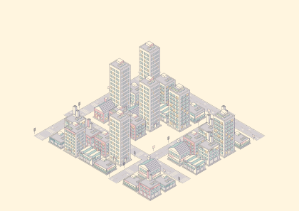

Residential · tiled cottage · 1 storey
18 buildings · 15 road tiles · six pen colours · one illustration system
Residential · tiled cottage · 1 storey
Residential · rose townhouse · 2 storeys
Residential · garden terrace · 3 storeys
Residential · balcony walk-up · 4 storeys
Residential · courtyard apartments · 6 storeys
Residential · skyline tower · 9 storeys
Commercial · corner café · 2 storeys
Commercial · neighbourhood market · 1 storey
Commercial · tiled bookshop · 3 storeys
Commercial · blue diner · 2 storeys
Commercial · rooftop hotel · 7 storeys
Commercial · glass offices · 5 storeys
Commercial · slender offices · 11 storeys
Industrial · loading warehouse · 2 storeys
Industrial · sawtooth works · 2 storeys
Industrial · chimney factory · 3 storeys
Industrial · repair workshop · 1 storey
Industrial · utility building · 4 storeys
Road · Straight · lane arrows
Road · Corner · lane arrows
Road · T junction · lane arrows
Road · Crossroads · lane arrows
Road · Dead end · lane arrows
Road · Straight · street signs
Road · Corner · street signs
Road · T junction · street signs
Road · Crossroads · street signs
Road · Dead end · street signs
Road · Straight · signals & zebra crossing
Road · Corner · signals & zebra crossing
Road · T junction · signals & zebra crossing
Road · Crossroads · signals & zebra crossing
Road · Dead end · signals & zebra crossing
